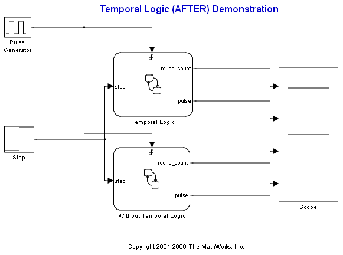
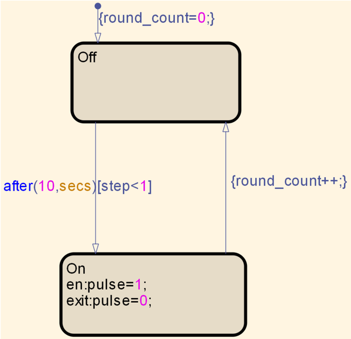
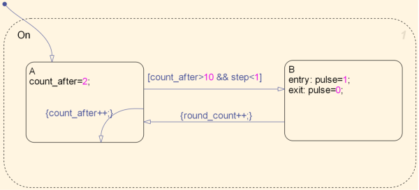

AFTER 関数を使った時相論理
この単純なデモでは、2 つの Stateflow® チャートの違いを比較します。1 つのチャートでは、目標を達成するために時相論理と AFTER 関数を使用し、もう 1 つのチャートでは、時相論理を使用せずに目標を達成します。
目次
時相論理演算子の使用
AFTER 関数を使用すると、チャート内で発生し、イベント遷移の条件として使用されているイベントの数を容易に把握することができます。たとえばこのデモでは、入力 step が 1 よりも少ない場合に限って、10 のイベント (「secs」というラベルが付いている) が通過してから Off ステートから On ステートへの遷移が発生します。この場合、入力 step は Simulink® の Step 関数ブロックを使用して作成され、イベント secs はパルス発生器によって定義されます。この step の値は、シミュレーションで 60 秒が経過するまではゼロです。60 秒が経過すると、step が作成されて step の値が 1 になります。チャートの遷移条件の 1 つが満たされないと ('step' < 1)、今後、遷移は発生せずにチャート アクティビティが停止する可能性があります。
時相論理演算子の不使用
時相論理を使用せずに、同じ効果を実現します。違いは、イベントの発生回数をカウントするために、追加の変数と遷移を含める必要がある点です。この場合、ローカル変数 count_after を使用して、イベント secs の発生回数を把握します。count_after が 10 よりも大きく、step (入力) の値が 1 よりも小さいと遷移が発生します。
